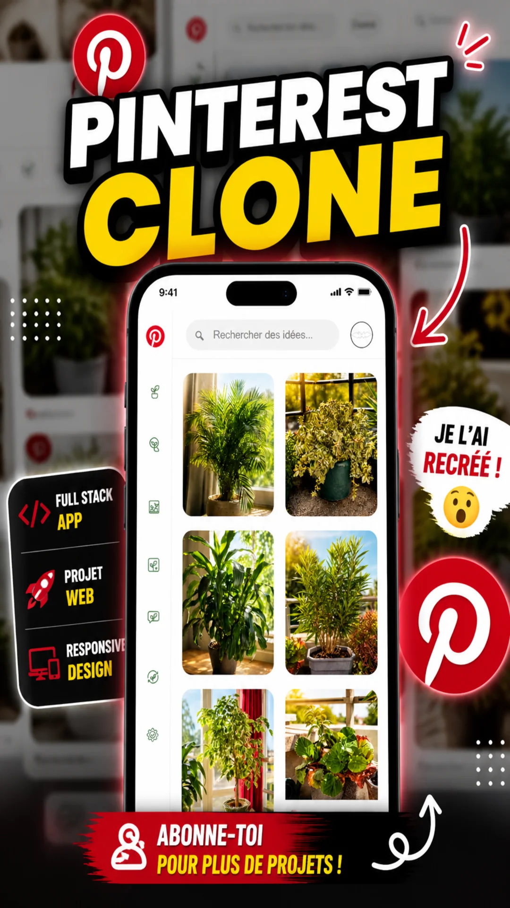

Objectif : progresser en développement front-end et en conception d’interface.
Projet front-end · Interface web
Une reproduction personnelle d’interface responsive réalisée en HTML, CSS et JavaScript. Il s’agit d’un projet indépendant, sans affiliation officielle à Pinterest.

Objectif : progresser en développement front-end et en conception d’interface.

Contenus : photographies prises par mes soins pour composer les visuels du projet.

Interface : icônes modifiées ou créées pour cette réalisation indépendante.